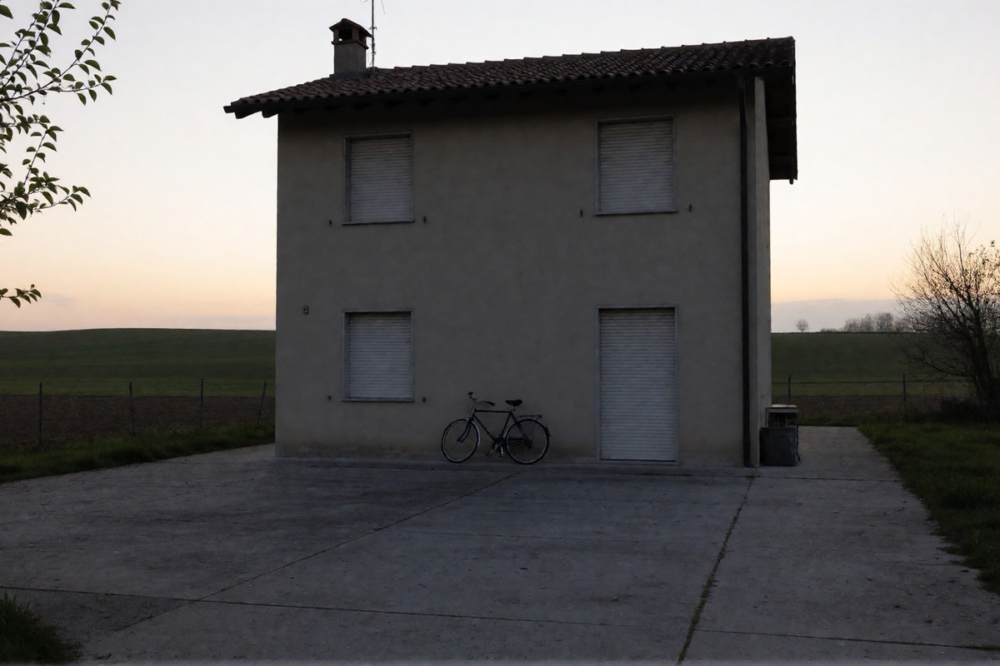

Cronaca · 18 novembre 2026
Novellara, segregata e violentata: il marito passa ai domiciliari

Una giovane di 25 anni, di origine pachistana, sarebbe stata tenuta chiusa in casa, picchiata e violentata dal marito e dai familiari di lui. Si salvò lanciandosi da un'auto in corsa. Dopo l'incidente probatorio il giudice ha alleggerito una misura.
di Franco Zanghì
Una giovane donna di 25 anni, di origine pachistana, sarebbe stata tenuta segregata in casa, picchiata e violentata dal marito e dai familiari di lui. È accaduto a Novellara, in provincia di Reggio Emilia: lo stesso paese di Saman Abbas.
Lo riferisce l'ANSA, che il 19 novembre ha dato conto dell'udienza davanti al giudice per le indagini preliminari di Reggio Emilia. Mercoledì 18 novembre la giovane è stata ascoltata in un incidente probatorio, in udienza protetta e con l'aiuto di un interprete, e ha ripercorso i passaggi più drammatici della sua storia.
Il salto dall'auto in corsa
Tutto è emerso il 4 giugno. Quel giorno, secondo gli investigatori, il marito, 27 anni, e i suoi familiari la stavano picchiando dentro un'auto, per punirla. La giovane si è lanciata dalla macchina in movimento. Due passanti l'hanno trovata per strada, sotto choc e con i segni delle violenze sul corpo, e hanno chiamato i soccorsi: sono intervenuti i carabinieri di Novellara.
Dalle indagini, racconta l'ANSA, è emerso che il marito e la famiglia di lui le impedivano di imparare l'italiano e di integrarsi. L'avrebbero in pratica chiusa in casa, fino a prenderla a pugni, schiaffi e frustate. E secondo la Gazzetta di Reggio, ripresa dall'ANSA, il marito l'avrebbe costretta ad avere rapporti sessuali non solo con lui, ma anche con il padre e i fratelli.
Le misure e la decisione del giudice
Ad agosto i carabinieri avevano eseguito quattro misure cautelari: il marito arrestato e portato in carcere, mentre per il suocero, 55 anni, e per due cognati, entrambi di 21 anni, erano scattati il divieto di avvicinamento e di comunicazione con la vittima e il braccialetto elettronico. Un quinto indagato, il terzo fratello del marito, si è aggiunto in sede di richiesta dell'incidente probatorio.
Dopo l'udienza del 18 novembre il giudice ha sostituito la custodia in carcere del marito con gli arresti domiciliari, e a uno dei fratelli ha tolto il braccialetto elettronico, perché è stato accertato che il 4 giugno non era presente. Per gli altri indagati non è cambiato nulla. Le indagini preliminari proseguono, e tutti gli indagati sono innocenti fino a una sentenza definitiva.
L'ombra di Saman
Saman Abbas aveva 18 anni quando, nel 2021, fu uccisa proprio a Novellara perché rifiutava un matrimonio combinato; per quell'omicidio sono stati condannati i suoi familiari. Il Giornale parla di un nuovo caso Saman. Questa volta, per fortuna, la storia è andata diversamente.
Il commento
Questa ragazza si è salvata da sola, con un salto da un'auto in corsa, e grazie a due passanti che non hanno girato la testa dall'altra parte. Ma una donna che vive in Italia da circa un anno, chiusa in casa e senza poter imparare una parola di italiano, è un segnale che qualcuno avrebbe dovuto vedere prima.
L'integrazione non è uno slogan: è una legge uguale per tutti, e in Italia una moglie non è proprietà di nessuno. Chi arriva lo deve sapere dal primo giorno. E chi vive accanto a queste famiglie deve sapere che segnalare non è fare la spia: può salvare una vita. Dopo Saman, è stato fatto abbastanza per non lasciare sole queste donne?
Fonti
- ANSA, «Segregata e abusata da marito e familiari nel paese di Saman», 19 novembre 2026
- il Fatto Quotidiano, «Abusata da marito e familiari nel paese di Saman: il racconto della 25enne pachistana davanti al giudice», 19 novembre 2026
- il Giornale, la ricostruzione del caso e il richiamo alla vicenda Saman Abbas, 19 novembre 2026
- TGcom24, «Reggio Emilia, segregata come Saman: picchiata e violentata per mesi dal marito e dai parenti di lui», 19 novembre 2026
- Gazzetta di Reggio, il dettaglio sui rapporti imposti, citata dall'ANSA, 19 novembre 2026
Indagini preliminari in corso alla data di pubblicazione: i cinque indagati sono innocenti fino a sentenza definitiva. La vittima non è identificata e non lo sono i suoi familiari.